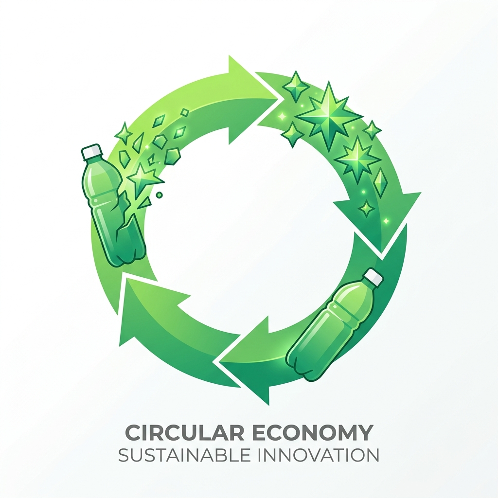
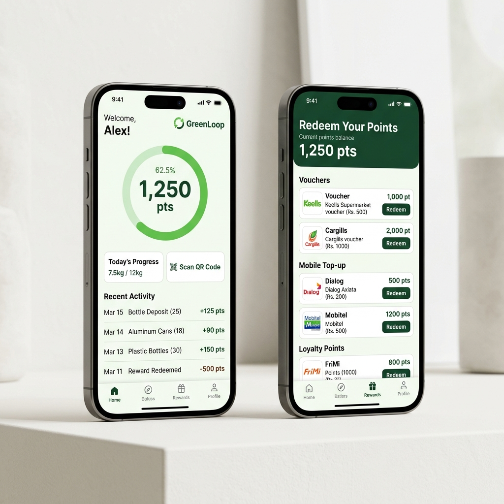
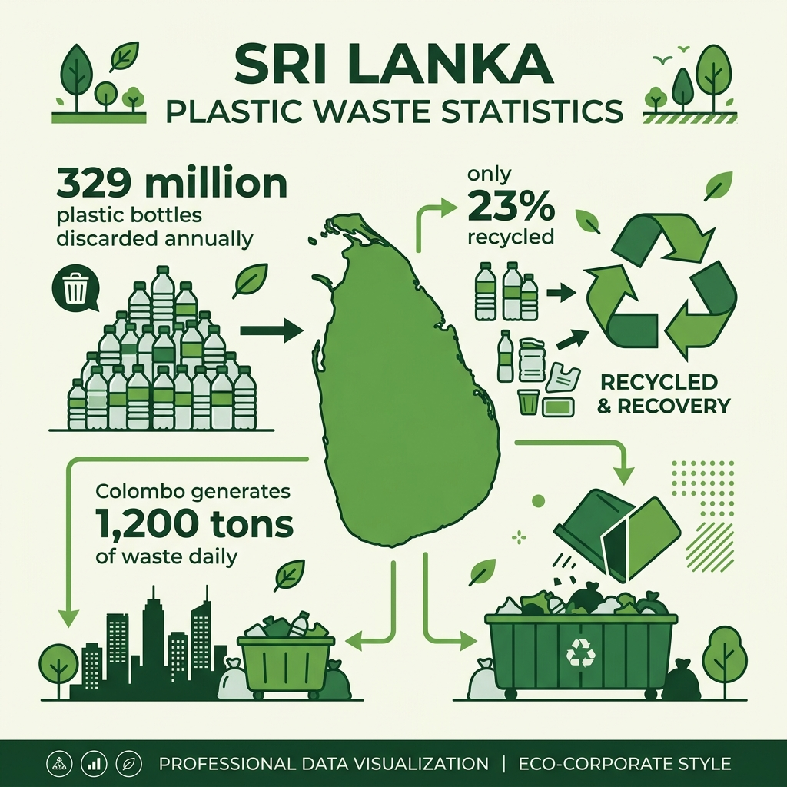
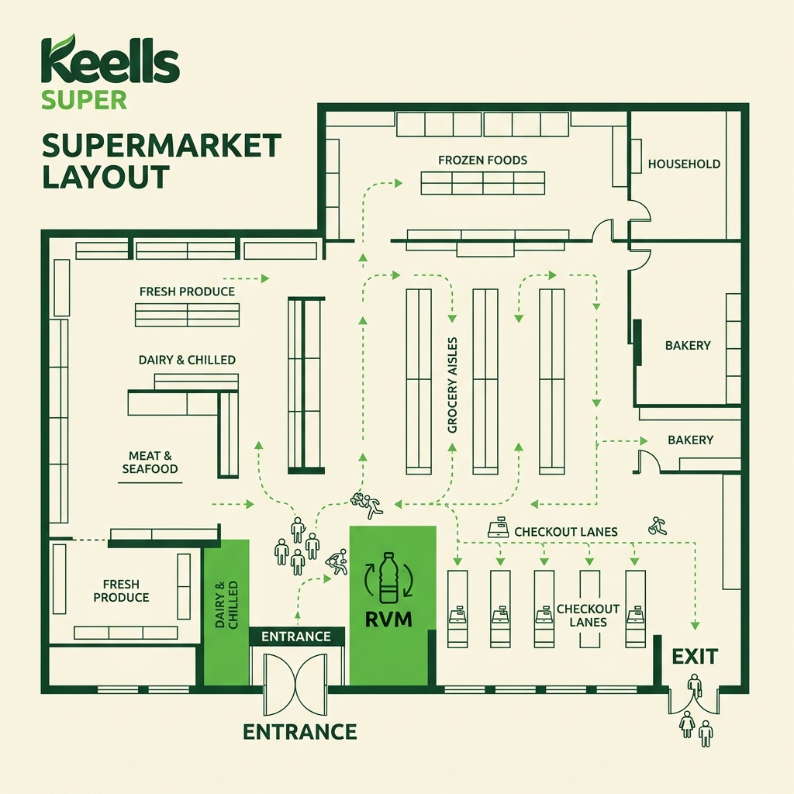
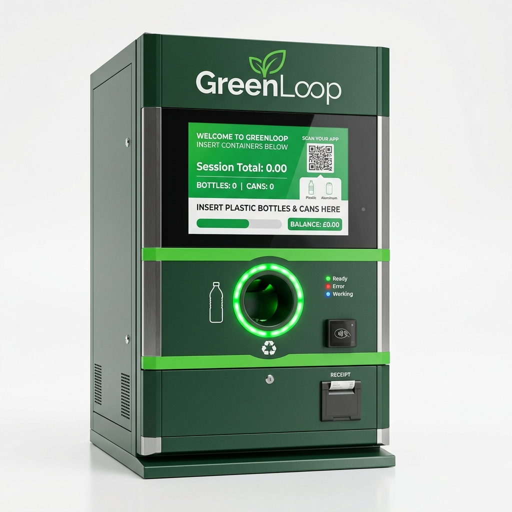

Green Loop
A Reverse Vending Machine (RVM) Recycling Service designed in strategic collaboration with the John Keells Group.
Moving from Passive to Incentivised Recycling
Plastic Waste & Passive Disposal
Sri Lanka generates a substantial volume of single-use plastic waste each year, much of which bypasses formal recycling. John Keells Group’s Plasticcycle initiative has placed recycling bins at retail outlets and public spaces, collecting over 215,000 kg of plastic waste. However, the bin model is fundamentally passive — it depends entirely on a person's pre-existing motivation, with no immediate feedback, reward, or proof of impact returned. The action and reward remain disconnected.
Instant, Rewarded Recycling
Green Loop closes the loop between action and reward. A user inserts a plastic bottle; the machine scans, verifies, compacts, and sorts it; and the user is rewarded immediately in Keells Nexus points before they walk away. The machine turns a vague environmental good intention into a concrete, instant transaction.
The Habit Loop Features
To build a lasting habit loop, the system integrates streak tracking, school leaderboards, and shareable personal-impact stats (kg recycled, bottles diverted, and CO₂e saved). This engagement layer exists purely to keep people motivated beyond the base utility of recycling.

Strategic Guidelines Directory
Research
Waste statistics, surveys, and barriers.
Product Definition
Active loops and Green Loop USP.
Branding & Identity
Logomarks, colors, and type guidelines.
Marketing
Launch channels, ad templates, and campaigns.
Machine Design
RVM mockups and outer branding skins.
Machine Placement
Entrance vestibules and lobby layouts.
User Experience
Touchscreen flows and app mockups.
Reward System
Nexus points conversion and carbon metrics.
Collection Process
Telemetry alerts and logistics dispatch cycles.
Customer Journey
Recycler steps and feedback loops.
Revenue Model
Customer retention and PET flake sales value.
Financial Plans
CAPEX/OPEX budgets and funding matrices.
Future Plans
Next-gen sorting and double-points campaigns.
The Plastic Waste Problem & Motivation Gap
Sri Lankan Waste Crisis
Sri Lanka generates a massive volume of single-use plastic waste annually, consuming over 300,000 metric tons of plastic. The national formal recycling rate stands at less than 10%, meaning over 90% of plastic waste bypasses formal recycling channels, clogging wetlands, waterways, and landfill sites such as Karadiyana and Dompe.
Passive Disposal Limits
John Keells Group's Plasticcycle initiative has worked to close this gap since 2017, placing recycling bins at retail outlets and public spaces, and collecting over 215,000 kg of plastic waste. However, the bin model is fundamentally passive — it depends entirely on a person's pre-existing motivation, with no immediate feedback, reward, or proof of impact returned. The action and reward are disconnected, capping participation well below potential.
Primary Survey Results & Demand Validation
Verifying Consumer Motivation
A primary survey conducted with over 30+ respondents validated the demand for instant rewards. When asked: "Would you use a machine that instantly rewards you for recycling a bottle?", 100% of respondents answered affirmatively. Additionally, 87% of respondents stated that the lack of convenient, incentivised drop-off points is their primary barrier to recycling plastic bottles regularly.
Incentive Preference Rankings
The survey surfaced strong user preference for instant grocery discounts (Nexus loyalty points) and mobile top-up reload credits over charitable donations. This directly shaped our choice of integrating the service with the John Keells Nexus loyalty program, matching the highest frequency shopper behavior.
Competitor & Landscape Analysis
| Product / Initiative | Position & Limitations |
|---|---|
| Plasticcycle (John Keells Group) | Bin-based passive collection network — 300+ bins, 215,000+ kg collected since 2017. No individual incentive or instant feedback; relies entirely on voluntary disposal. |
| Trash2Cash (Chakra Suthra, Sri Lanka) | Sri Lanka’s first plastic-for-reward recycling system, exchanging plastic for mobile reload credit. Confirms local demand for incentivised recycling; no public RVM hardware network identified at scale. |
| TOMRA (Global Market Leader) | 91,000+ RVM installations across 60+ markets; deposit-return systems achieve up to 98% return rates. Enterprise-grade hardware, not localised for a Sri Lankan retail or CSR-partnership model. |
| Tadweer (UAE) | Government-backed RVM network paired with a consumer rewards app. Strong template for the hardware + app + CSR loop; not present in Sri Lanka. |
| Generic RVM Manufacturers (China/India) | Off-the-shelf machines with barcode scanning, compaction, and printed/SMS coupons. Affordable hardware base, but no brand, no local partner network, no app ecosystem. |
Key takeaway: No local player currently combines instant reward + retail-embedded placement + a corporate sustainability partner with an existing collection and processing network. Positioning the RVM service alongside Plasticcycle’s infrastructure fills this gap.
Unique Selling Proposition
"Recycling, Rewarded Instantly."
Green Loop is a Reverse Vending Machine (RVM) service that closes the loop between action and reward. It is designed to plug directly into the John Keells Group's sustainability network, providing users with immediate points, checkouts discounts, and environmental statistics in exchange for empty plastic bottles.
Driving Circular Action
Instead of relying on a person's voluntary environmental good intentions, the RVM turns recycling into an immediate transaction. It is a premium product experience that bridges the physical action of dropping a bottle and the digital receipt of loyalty incentives, creating a repeatable habit loop.
Feasibility Decisions & Accepted Materials
- Deposit Mechanism: Single-bottle horizontal intake slot with physical scanners to prevent double-feeding.
- Reward Medium: Direct integration with the Keells Nexus card, posting points instantly to shopper profiles.
- Accepted Materials: Clean, dry PET plastic bottles of all standard sizes (250ml - 2L). Aluminum can sorting to be introduced in Phase 3.
- First Placement Site: Selected pilot supermarket vestibules in the Colombo Metropolitan Area.
Logomark & Construction
The primary horizontal mark, combining the recycling loop logomark with clean custom sans-serif typography. Optimized for retail store lobbies and the physical RVM outer skin.
The secondary stacked logo layout, designed for narrow vertical spaces such as coupons, receipts, and companion app screens.
Logo Construction Grid & Constraints
A strict minimum clear space boundary equal to 1.5 times the radius of the outer symbol ring must surround the entire logomark, keeping it free from surrounding visual clutter.
The symbol geometry utilizes an outer concentric circle boundary construct mapped exactly to a 10x10 drafting division grid.
Do not recolor elements ad-hoc. Do not distort the circular loop proportions or adjust spacing alignments of the text block.
Primary & Secondary Color System
Keells Green
Reflects the primary corporate color of Keells Supermarkets. Used as the main accent color, active buttons, and logo markers.
Downstream Green
Used for dark backgrounds, structural framing lines, and secondary headers. Highlights downstream collection paths.
Nexus Gold
Reflects the Keells Nexus loyalty program color. Used for highlighting reward payout panels, points figures, and key visual alerts.
Editorial Specimen & Scale Rules
The primary display typeface. Used exclusively for section titles, headers, and hero brand splash screens. Chosen for its clean, premium geometric curves.
The body typeface. Used for descriptions, labels, dashboard cards, and technical specification paragraphs. Offers high legibility at small sizes.
Photography Art Direction Guidelines
High Contrast Minimalist
Green Loop photography guidelines dictate high-contrast, clean setups. Subjects are captured in bright ambient retail environments or natural workspaces, with primary green focal elements drawing interest. Maintain clean horizons and minimal clutter.
Symmetrical Composition
Images are framed symmetrically with the primary subject in the horizontal center. A crop scale grid must maintain comfortable margins, supporting dl templates, standard A4 letterheads, or mobile companion screens without clipping crucial details.
Icon Construction & Grid Rules
Stroke Weight Standards
Green Loop system icons utilize a strict 2px stroke weight with 4px circular radius corners. Drawn on a 24x24px workspace canvas to ensure perfect pixel alignment and crisp, high-end rendering across screens.
Feedback Coloring
Standard inactive state icons are styled in charcoal grey. Hover state highlights transition smoothly to primary Green (#6DBB45). Active or alert icons utilize Nexus Gold (#FFD54A) to immediately draw visitor attention.
Touchpoint Gallery Specs
[ Scroll horizontally to explore brand applications ]
Co-branded contact cards for Green Loop regional representatives.
Official template for drafting joint agreements and operating rules.
Standard correspondence envelopes with minimalist branding.

Desktop site interface featuring a live locator map and ESG counter.

Consumer mobile app layout showing streaks and loyalty points.

Corporate interface monitoring collection volume and automated alerts.

Co-branded RVM outer styling wrapper featuring screen and slot guides.

Lobby placement diagram mapping RVM kiosk coordinates near checkout paths.

Perspective render of the RVM kiosk in a supermarket lobby entrance.
POS Signage & Creative Templates
In-Store Grocery Demos
POS instructional flyers and posters placed next to Keells checkout counters and entry pathways direct customers to the RVM lobby kiosks. Using a simple 3-step icon guide ("Scan-Deposit-Redeem"), signage triggers immediate visual habits. Demos run during initial pilot weeks using brand ambassadors.
Social Campaign Grid
Campaign header: "Your bottle is worth more than you think." Bold, left-aligned Outfit typography overlays placed on unbleached white workspaces with primary green highlights. Post layouts follow a strict 1:1 square crop ratio with blueprint grids.
Marketing Channels & Objectives
- Digital Marketing: Short format videos on Instagram and TikTok showing user deposits and rewards.
- Content Marketing: Explainer content on plastic collection streams in Sri Lanka and behind-the-scenes video showing Eco-Spindles apparel manufacture.
- Co-branded Campaigns: Supermarket lobby banners and co-branded flyers with JKH Plasticcycle.
- Official Web Locator: Desktop web page with locator status maps and live total kg recycled counts.
Machine Appearance Mockup & Skin
Premium Matte Metal Finish
The RVM outer shell features a premium, matte metal cabinet wrapped in the co-branded Green Loop identity skin. The cabinet front highlights the 21.5" capacitive full-HD touchscreen user interface and primary green entry slots, designed to align with modern supermarket lobby aesthetics and capture immediate customer attention.
Machine Footprint & Spacing
- Physical Dimensions: 1.2m width × 1.0m depth × 1.8m height footprint.
- Service Access: 1.0m front door-swing clearance is required for maintenance and bag collection.
- Mains Connection: Standard 230V AC single-phase mains power supply.
- Data Connectivity: Integrated 4G LTE telemetry loop for live dashboard updates.
Supermarket Lobby Placement Strategy
High Exposure & Easy Access
RVM kiosks are positioned directly inside the primary entry vestibules or exit lobbies of Keells Super outlets. Placing units at these visual bottlenecks ensures 100% shopper footfall exposure upon entering and leaving, making deposits convenient before shopping.
Service Desk & Queue Synergies
Locating machines in direct line-of-sight of checkout lanes and customer service desks prompts shoppers to scan app barcodes and make quick recycling deposits before starting their groceries walk. This also allows store staff to assist users and manage paper roll swaps easily.
RVM Touchscreen Interface Steps
Simple 4-Step User Interface
- Scan Card: Tap the physical Nexus loyalty card or scan companion app QR code at the reader to log in.
- Insert Bottle: Insert clean, uncrushed plastic bottles one-by-one into the horizontal intake slot.
- Verify & Crush: Cabinet sensors scan the barcode and weights; the compaction crusher flattens the container.
- Confirm Payout: Touch "Redeem Points" to verify final collection counts and update account point totals.
Companion Mobile App Interface
- Scan-to-start QR: QR barcode on home screen links transactions to user's Nexus profile instantly.
- Live Points Balance: Real-time display of accumulated Nexus loyalty totals.
- Redemption Catalogue: Direct coupon exchange, grocery credits, and charity transfers.
- Nearby Machine Map: Interactive map showing active RVM locations and fill status.
- Personal Impact Tracker: Shareable personal-impact stats showing kg recycled, bottles diverted, and CO₂e offsets saved.
Keells Nexus Points Subsidy System
Earned for every 20 PET bottles deposited
Instant cash discount redeemable at checkouts
CO₂e emissions saved per 20 bottles crushed
| Bottles Deposited | Nexus Points Earned | Equivalent LKR Discount | Equivalent CO₂ Reduction |
|---|---|---|---|
| 20 Bottles | 25 Points | Rs. 25.00 | 0.60 kg CO₂e |
| 40 Bottles | 50 Points | Rs. 50.00 | 1.20 kg CO₂e |
| 100 Bottles | 125 Points | Rs. 125.00 | 3.00 kg CO₂e |
Automatic 3/4 Capacity Collection Alerts
How the Machine Notifies Us
Green Loop cabinets integrate smart optical infrared depth beams and weight sensors. When the internal PET compaction bin reaches 3/4 full (75% capacity), the unit automatically triggers a high-priority collection alert over its 4G cellular data loop, logging coordinates and capacity warnings directly to the JKH Central Dashboard.
Avoiding Overflow Scenarios
By alerting logistics coordinators at the 75% threshold rather than full capacity, the system guarantees a 12-to-24-hour response buffer. This prevents machine overflow issues, maintains continuous uptime, and optimizes truck routing based on real-time fill rates.
Reverse Logistics Collection Path
Compaction: RVM motor crushes PET bottles on-site, saving bin space.
Infrared telemetry: IR sensors trigger pickup alert at 75% volume.
Fleet dispatch: SLRA logistics dispatches transport truck to collect flakes.
Downstream: Compacted flakes delivered to Eco-Spindles for processing.
Shopper Recycle & Reward Journey Map
Discovery
Customer enters Keells Super with a bag of bottles and spots the RVM lobby wrap.
Auth Scan
Scans the Keells companion app Nexus QR barcode at the screen reader.
Deposit
Feeds clean PET bottles. RVM compacts them and logs quantities.
Rewards
Nexus points (25 pts/20 bottles) post instantly to the shopper profile.
Redeem
Customer redeems points at the checkout lane, lowering bill total.
Behavioral Science & Habit Formation
Cue -> Action -> Reward Loop
- Cue: Seeing the bright RVM cabinet in the Keells lobby with grocery bags in hand.
- Action: Feeding clean plastic bottles into the machine.
- Reward: Earning Keells Nexus points and seeing carbon savings update in real time.
- Repeat: Lowering the final shopping checkout bill encourages repeating the action.
Joint Strategic Value & PET Sales
Groceries Basket & Retention Drive
The primary value driver for Keells Super is customer retention and brand equity. Shoppers earn points specifically redeemable at Keells, drawing eco-conscious customers away from competitors and increasing monthly supermarket basket spend. Customers develop a clear visual association: Keells is their main hub for recycling.
Industrial Raw Material Sales
Compaction on-site turns bulk bottles into clean PET flakes. Green Loop sells these pre-compacted flakes directly to Eco-Spindles as high-grade industrial raw materials for conversion to recycled apparel fiber. The sales proceeds directly fund loyalty point subsidies and offset reverse logistics transport costs.
Three-Year Financial Projections & Budgeting
| Ecosystem Financial Item | Year 1 (Pilot Hubs) | Year 2 (Regional Expansion) | Year 3 (Maturity Phase) |
|---|---|---|---|
| RVM Kiosk Procurement (CAPEX) | Rs. 4,500,000 | Rs. 18,000,000 | Rs. 45,000,000 |
| Operational & Fleet Logistics (OPEX) | Rs. 650,000 | Rs. 2,400,000 | Rs. 5,800,000 |
| Points Subsidy & Reward Cost | Rs. 1,200,000 | Rs. 4,800,000 | Rs. 12,000,000 |
| PET Flakes Material Sales Revenue | Rs. 950,000 | Rs. 3,800,000 | Rs. 9,500,000 |
| ESG Subsidies & Brand Sponsorship | Rs. 1,500,000 | Rs. 6,000,000 | Rs. 15,000,000 |
| Net Circular Valuation / Return | Strategic Positive | Payback Achieved | High-Yield Circularity |
Future Roadmap & Island-Wide Scaling
Pilot Launch (Colombo Metro)
Deploy 10 smart RVM kiosk units across high-volume Colombo Keells supermarkets. Verify telemetry, Nexus API loyalty speeds, and SLRA collection logistics.
Island-Wide Supermarket Rollout
Scale up to all Keells Super outlets nationwide (130+ locations). Launch regional school recycling leaderboards and POS checkouts marketing campaigns.
Next-Gen Smart Materials Sorting
Introduce multi-sensor sorting RVM cabinets supporting aluminum cans and smart glass sorting. Launch nationwide campaigns for Nature's Special Days.
School Fields Trips & Civic Leaderboards
Curriculum-Linked Field Trips
JKH partners with local schools to run circular economy field trips to select Keells outlets. Children learn how depositing empty plastic bottles connects directly to sustainable apparel yarn manufacture at Eco-Spindles.
Civic Gamification & Pride
To foster friendly neighborhood competition, RVM touchscreens and companion app displays showcase monthly recycling leaderboard metrics for local schools and residential sectors, gamifying circular habits.
Regional Clean-Up Competitions
School-sponsored recycling campaigns, rewarding the top-depositing classrooms with Eco-Spindles recycled cotton uniforms and school gear, encouraging active student participation.
Nature's Special Days Promotional Calendar
| Special Day | Target Date | Promotional Activation Campaign | Reward Incentive |
|---|---|---|---|
| Earth Day | April 22 | Double points deposits: "Feed the Earth, double your grocery savings." | 50 Nexus Pts (20 bottles) |
| World Environment Day | June 5 | School cleanup drives: double points for student group deposits. | 50 Nexus Pts (20 bottles) |
| World Oceans Day | June 8 | Ocean plastic recovery credit: double reward for beach clean PET collections. | 50 Nexus Pts (20 bottles) |
| International Recycling Day | November 17 | Annual circular award: top neighborhood recycler reward ceremony. | Keells Vouchers (Rs. 1000) |